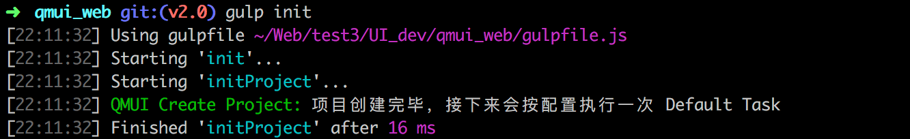

更新
QMUI Web 目前以 Github Release 管理版本，使用快速开始安装 QMUI Web 的用户只需进入项目 UI_dev/qmui 目录执行 git pull 即可更新至最新版本。通过其他方式安装的用户可以直接在 Github 中下载最新版本来进行更新。
QMUI 框架目前已经推出 2.0.0 版本，在该版本中抛弃了对 Compass 的依赖，Sass 编译处理也从 Ruby-Sass 替换为 Node-Sass，因此 1.x 版本升级到 2.0.0 后需要对项目进行一些处理才能适配。为了效率的提升，我们建议所有用户升级到 2.0.0 版本。目前升级到 2.0.0 后只需对项目执行两步修改：
- 在 UI_dev/config.js 中增加
styleResultPath和needsSourceMaps两个字段，分别为 CSS 输出目录（相对 qmui_web 目录）和编译样式是否需要 Source Maps 支持，默认值分别为../../public/style/css和false。 - 在 UI_dev/qmui_web 下执行一次
npm install，安装增加的依赖包。
如果还使用了 QMUI 的一些附加组件/工具，那么还需要注意以下两点：
- 如果还使用了原 CSS Sprite 的扩展组件，还需要改为新的雪碧图语法，请参考这里。
- 如果有使用 QMUI Web Desktop，请升级至 1.3.0 或以上版本。
概况
QMUI Web 主要分为 project 和 qmui 两个文件夹，project 是我们实际编写项目内容的文件夹，分为 logic（业务代码） 和 widget（公共组件），为了保持 QMUI 的独立性，project 文件夹会被基于 gulp 的工具复制一份到外层目录中使用，而不是直接修改 QMUI 目录中的版本。这个工具实际上也是 QMUI 提供的脚手架，会提供如雪碧图处理、include 模板功能、清理文件、压缩功能等便捷功能。
QMUI Web 遵循 QMUI 编码规范，因此框架中提供的样式除 Reset 外都以 qui_ 作开头，以充当框架的命名空间。业务上的样式也应该有自己的命名空间，例如本 Demo 中的样式的公共部分都以 dm_ 开头，各细致的业务就以业务的功能作开头（例如组件页面的非公共代码都以 widget_ 开头），从而以不同的命名空间划分不同的样式，避免样式的互相干扰。
除此以外，QMUI 封装了大量 Sass 方法供使用，另外还在 Demo 中以参考组件的形式收录了一些结构较复杂的扩展组件，供使用者参考。
环境配置
QMUI Web 基于 gulp 和 Node.js，请确保安装 Node.js（4.0 以上版本），并用以下命令全局安装 gulp：
#安装 gulp
npm install --global gulp
项目结构
QMUI Web 对项目文件结构（UI 层相关文件）有一定的依赖，不同的项目中如果能有相似的文件结构，也能便于开发。推荐的文件结构如下：
项目根目录 ├─public // 静态资源目录，由 gulp 生成 │ ├─js // 静态资源 js 文件 │ ├─style // 静态资源 UI 文件 │ │ ├─css // 静态资源 css 文件 │ │ └─images // 静态资源 images 文件 │ └─template // 最终的模板目录，区别于静态模板基于原生 HTML，最终模板通常是用功能完备的模板引擎驱动 ├─UI_dev // 实际进行开发的样式目录 │ ├─project // 项目相关 Sass 与 images 文件，由 gulp 生成，请参考“创建新项目” │ │ ├─images // 项目相关图片文件 │ │ ├─logic // 项目相关逻辑样式 │ │ └─widget // 项目相关公共组件样式 │ └─qmui_web // QMUI Web 主源码应放置在这一层目录 ├─UI_html // 静态模板目录 └─UI_html_result // 静态模板经 gulp 处理后的版本，用于前端拼接最终的模板
这些目录 QMUI 会提供工具帮助完成创建，开发者并不需要手工创建这些目录。
另外这些目录结构只是层次上要求如此，即不建议修改目录的层级，但目录名如果与其他模块或组件冲突，可以自行修改目录名，并同步修改 config.js 的相关设置（config.js 需要复制到 UI_dev 中修改，如果直接修改 QMUI 源码中的配置文件，会影响框架的独立性，详细请参考“使用配置文件”）
图片文件管理
为了解决 CSS Sprite 造成的重复劳动工作以及管理图片，QMUI 提供了一套图片文件管理的方案。图片文件统一放置在一个目录中（project/images），其中，需要做雪碧图的图片应该在 images 下建立子目录统一放置，QMUI 会根据相应的规则合成雪碧图，关于这一点的详细情况，请参考这里。而不需要做成雪碧图的独立图片，应该放置在 images/independent（由 config.js 中的 independentImagesDirectory 选项控制）目录中，该目录中也可以再建立子目录。无论是雪碧图还是独立图片，QMUI 都会统一管理这些图片，输出到静态资源目录（public/style/images），并自动进行图片压缩。
快速开始
如果需要的环境已经配置好，那么就可以正式创建一个新项目了。
推荐使用 Yeoman 脚手架 generator-qmui 安装和配置 QMUI Web。该工具可以帮助你完成 QMUI Web 的所有安装和配置。
#安装 Yeoman，如果本地已安装可以忽略
npm install -g yo
#安装 QMUI 的模板
npm install -g generator-qmui
#在项目根目录执行以下命令
yo qmui

对于需要有更强定制性的开发者，请参考创建新项目（高级）
框架的使用
作为一个框架，QMUI Web 主要提供了四种能力来提升 UI 开发的效率与质量。分别用于快速实现项目 UI，快速解决重复劳动力工作，CSS 的预处理和复杂的组件参考四个方面，这也是 QMUI Web 的使用目标。
基础配置与组件

脚手架
Sass 增强支持
扩展组件
兼容性策略
QMUI 提供的几个能力里面，基于 gulp 的脚手架都是开发过程的辅助工具，与浏览器兼容无关。而 QMUI 的提供的 Sass 方法、公共组件都兼容 IE6+。扩展组件由于是从不同的业务中抽取出来，因此兼容性并没有统一的标准，请参考每个扩展组件的标注。
完善框架
如果有意见反馈或者功能建议，欢迎创建 Issue 或发送 Pull Request，感谢你的支持和贡献。
内置工作流调试辅助
当 QMUI Web 工作流在工作时，会自动检测工作流源码是否有更新并在有更新时发出通知，包括日志通知以及声音通知。
另外为了方便调试，QMUI Web 带有 Debug 模式，通过 Debug 模式开启工作流后，当 QMUI Web 检测到工作流源码有更新时会发出通知并自行重启工作流，方便调试。
#在 qmui_web 目录中执行以下命令可以开启 Debug 模式工作流
gulp --debug日志方法
修改 QMUI Web 工作流时，应当使用 QMUI 提供的公共日志方法而不是 console：
// 示例
common.log('Tag', '普通消息')
common.warn('Tag', '警告消息')
common.error('Tag', '错误消息')创建新项目（高级）
对于需要有更强定制性的开发者，可以采取自行配置的方式引入 QMUI Web。自行配置的方式适用于需要修改项目目录名等定制性较强的情况。如果使用这种开发方式，那么项目中的目录结构需要手工创建，但目录名可以自行取名，只需要修改配置表即可（下面会介绍如何使用配置表）。
挂载 QMUI 为 SVN 外部库
创建项目的第一步，是引入 QMUI 的框架文件，建议采取 Git submodule 或 SVN 外部库的方式引入，这是希望把 QMUI 的源码修改与项目源码修改隔离开，达到互不干扰的效果。根据上面的项目结构要求，QMUI 框架应该引入到 UI_dev/qmui_web 目录中（如果 UI_dev 也可以修改为其他名称，这里只是要求目录层级如此）。
QMUI 采用 npm 进行 node 包管理，因此你还需要使用 npm 安装 QMUI 依赖的 node 包，请在 UI_dev/qmui_web 目录下执行以下命令（QMUI Web 所有相关命令都在 qmui_web 目录下执行）：
#使用 npm 安装依赖包，待安装完毕后才可继续进行下一步（Windows 下面不需要 sudo）
sudo npm install使用配置文件
在 qmui_web（QMUI Web 框架根目录）中，有一个配置文件 config.js，在项目开始之前应该把配置文件复制到 qmui_web 的上一层目录（按推荐的文件结构，应该是 UI_dev 目录），用于框架在 gulp 这一层的配置。
具体地说，config.js 配置 gulp 在使用时的一些依赖的变量，如果开发时使用的就是框架所推荐的文件结构，那么基本上只需要配置 project 和 prefix 两个参数即可。详细的配置选项如下：
project项目名称，暂时没有被实际用到，只是预留接口prefix代码前缀，用于在样式和 HTML 中创建 class 的命名前缀，即命名空间，必须根据项目名称定好一个清晰不容易与其他项目冲突的前缀resultCssFileName项目主样式文件的名称，在创建新项目时会被用到，一般来说，QMUI 建议如果项目不是非常大的量级，都只使用一个样式表，方便代码管理cleanFileType执行gulp clean 命令时需要清除的文件needsSourceMaps是否需要支持 Css Source Maps。needsImagesMinAndSync是否需要压缩图片功能。browserSyncModBrowserSync 的运行模式，默认为 'server'，即本地服务器模式，'proxy' 为代理模式，'close' 表示不开启本功能。browserSyncPort自定义端口，默认为3030。请注意避免使用常用端口以及其他本地已占用的端口，包括在代理模式（proxy）下不能与代理对象使用相同的端口。browserSyncShowLog是否在显示 BrowserSync 的日志，默认为 false，即不显示日志。browserSyncStartPath开启 BrowserSync 后的默认打开的路径。browserSyncHost自定义开启 BrowserSync 后的默认 IP，可填写域名。为空则默认为 localhost。开启 BrowserSync 后，浏览器地址栏会自动打开 browserSyncHost + browserSyncStartPath 合并后的网址。browserSyncWatchPath要监控变动的文件目录，一旦该目录下文件产生变动则自动刷新浏览器。browserSyncServerRoute自定义路由，把项目中的目录结构定义成指定的路由，本地服务器模式（server）下方可产生作用。browserSyncProxy需要进行代理的代理地址，代理模式（proxy）下方可产生作用。htmlSourcePath静态模板来源目录，即模板开发的目录imagesSourcePath图片文件来源目录，即图片开发的目录htmlResultPath静态模板经 gulp 处理后输出的目录，即把 include 合并后的输出版本imagesResultPath图片文件经 gulp 处理后输出的目录，即最终实际被项目使用的图片资源independentImagesDirectory独立图片的开发目录的目录名，QMUI 会根据这个目录名在 imagesSourcePath 目录中生成一个子目录styleResultPath样式表经 gulp 处理后输出的目录openIncludeFunction是否开启模板 include 引擎，默认开启includePrefixinclude 引擎所使用的前缀，它影响了所有 include 方法的使用，默认为 @@
其中 htmlSourcePath imagesSourcePath htmlResultPath imagesResultPath browserSyncWatchPath browserSyncServerRoute 这六个选项都是项目资源的路径配置选项，若要修改，请注意相对路径是以 qmui_web 目录为 Base Path。
执行创建新项目命令
最后一步就是执行创建新项目的命令，只需在 qmui_web 目录下执行一句命令。项目创建完毕后控制台会有提示。
gulp init
用户个人配置
考虑到每位开发者可能有自己的开发习惯，因此除了项目中的 config.js，QMUI 还支持每位开发者在本地建立个人的配置表，例如项目中的 config.js 的 needsSourceMaps 被统一设置为 true，因此这时所有开发这个项目的成员都会默认使用 Source Maps 的功能，但项目成员中有开发者希望关闭这个功能，那么这位成员可以在 config.js 平级建立一个 config.user.js 文件，把 needsSourceMaps 设置为 false，那么 QMUI 会优先以 config.user.js 中的值为准。需要注意的是，config.user.js 应当在本地建立和使用，不应该提交到版本管理中，否则也会影响其他项目成员。